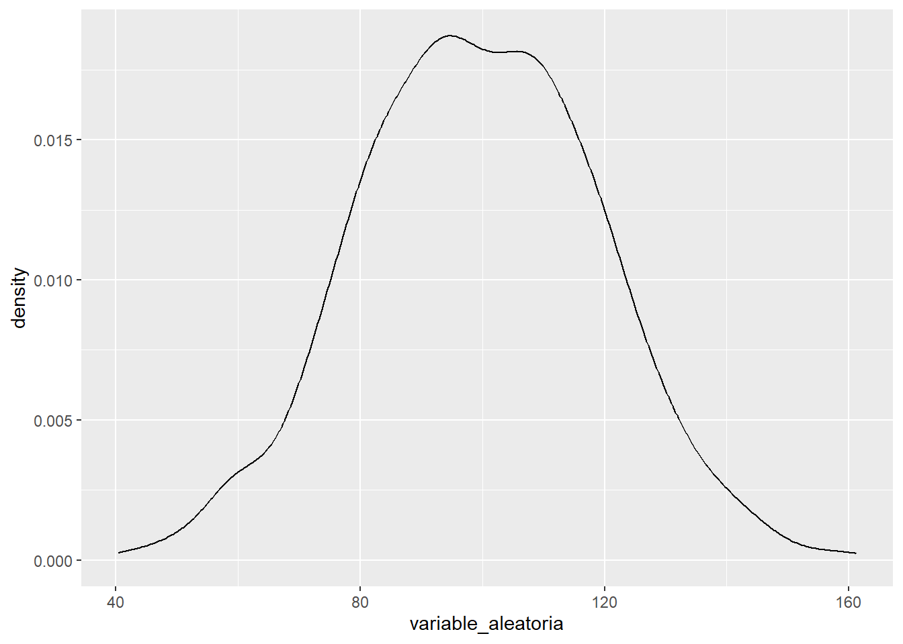
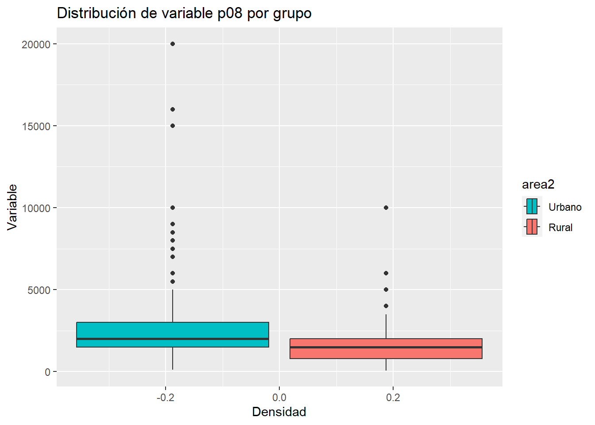

Sesión 5 IC para una media y una proporción, IC entre grupos
5.1 Objetivo de la sesión.
Comprender qué es un índice aditivo y cómo se utiliza como medida resumen.
Calcular el IC del índice para toda la población y entre grupos.
Visualizar el IC del Índice entre grupos.
5.2 Índice Aditivo

Un índice aditivo es una técnica utilizada en la investigación social y otras áreas para combinar múltiples indicadores o variables en una única medida compuesta. La idea central detrás de un índice aditivo es sumar las puntuaciones o valores de diferentes ítems para obtener un puntaje total que represente una característica o concepto más amplio que no se puede medir directamente con un solo ítem.
Supongamos que realizas una encuesta y pides a los encuestados que evalúen su satisfacción con los servicios públicos de agua, luz y desagüe utilizando una escala Likert de 1 (muy insatisfecho) a 5 (muy satisfecho). Ahora, deseas combinar estas tres variables en un índice aditivo que mida la satisfacción general con los servicios públicos.
Paso 1: Obten los datos Por ejemplo, un encuestado ha contestado: Agua: 4 Luz: 5 Desagüe: 3
Paso 2: Creación del índice aditivo Para crear el índice, simplemente sumarías las puntuaciones de estas tres variables:
Índice de Satisfacción = Agua + Luz + Desagüe Índice de Satisfacción = 4 + 5 + 3 = 12
El puntaje total para este encuestado en el índice de satisfacción con los servicios públicos sería 12. Dado que estás utilizando una escala Likert de 1 a 5 y tres servicios, el puntaje máximo posible para el índice sería 15 (si estuvieran muy satisfechos con los tres servicios) y el mínimo sería 3 (si estuvieran muy insatisfechos con los tres servicios).
Paso 3: Estandarización
Reescalar es el proceso de ajustar el rango de una variable para que se ajuste a una nueva escala. En el contexto de nuestro índice de satisfacción con los servicios públicos, reescalar los datos a una escala de 0 a 10 puede tener varias ventajas.
Primero, una escala de 0 a 10 es intuitivamente comprensible para la mayoría de las personas, ya que es similar a las escalas que a menudo se utilizan en educación para calificar el desempeño.
Segundo, al tener un rango definido, facilita la interpretación y comparación de los resultados. Por ejemplo, un valor de 8 en esta escala sugiere una alta satisfacción, mientras que un valor cercano a 0 indica insatisfacción.
Finalmente, reescalar a una escala estándar como 0 a 10 puede facilitar la comparación con otros índices o estudios que utilicen la misma escala, permitiendo una evaluación más uniforme y coherente.
Para ello, podemos utilizar el paquete scales y específicamente la función `rescale()``
Paso 4: Describir
Una vez reescalado, el índice se convierte en un resumen efectivo de las variables originales, consolidando la información en una única medida. Esta representación condensada facilita su uso en análisis posteriores. Por ejemplo, podemos obtener intervalos de confianza para el índice, proporcionando un rango de valores en el que es probable que se encuentre la verdadera media poblacional. Además, el índice reescalado puede ser utilizado en diversos modelos estadísticos, análisis de tendencias o incluso comparaciones entre diferentes grupos o períodos de tiempo, ofreciendo una herramienta versátil para la investigación y toma de decisiones.
5.3 Intervalos de confianza para grupos
El intervalo de confianza de una media en grupos brinda un rango estimado para la verdadera media poblacional dentro de categorías específicas o subconjuntos de datos, siendo crucial en análisis sociopolíticos.
En lugar de un solo intervalo para toda una población, se calcula un intervalo para cada grupo de interés político o social.
Permite realizar comparaciones detalladas entre distintos grupos sociopolíticos o demográficos.
Su utilidad en ciencia política y ciencias sociales incluye: Evaluación de la aprobación de líderes políticos entre diferentes grupos demográficos (por ejemplo, por edad, género o nivel educativo), análisis de tendencias electorales en diferentes regiones o entre distintos grupos socioeconómicos, estudio de la percepción pública sobre políticas específicas, como reformas educativas o de salud, entre diferentes sectores de la población, comparación de niveles de confianza en instituciones gubernamentales entre urbanos y rurales o entre diferentes grupos étnicos, entre otros.
Es esencial para entender las dinámicas y divisiones dentro de una sociedad, identificando posibles brechas o áreas de consenso.
En resumen, es una herramienta vital para académicos, analistas y tomadores de decisiones en ciencia política, permitiendo un análisis más profundo y matizado de las actitudes y percepciones públicas.
Para nuestros fines, nos alejaremos un poco de la fórmula que vimos la clase pasada y lo haremos todo mucho más rápido con la utilización de la función ciMean().
5.4 Ejercicio 1
5.4.1 Pregunta de investigación
En base a la data ENADES, calcule un índice aditivo de Percepción sobre la desigualdad en el acceso a servicios públicos.
Para ello, vamos a utilizar estas cuatro variables:

Brinde el intervalo de confianza de la media de percepción sobre la desigualdad en el acceso a servicios públicos en la población al 95%
Asimismo, genere una comparación de los intervalos de confianza para los sectores de “Lima Metropolitana” y “Perú sin Lima” (según variable zona3)
ABRIMOS LA DATA
##
## Attaching package: 'kableExtra'## The following object is masked from 'package:dplyr':
##
## group_rows5.4.2 Creamos el índice aditivo
Paso 1: Verificar que las variables corresponden al concepto
En este caso las tres se destinan a medir una percepción en relación a la desigualdad de la entrega de un servicio por parte del Estado.
Paso 2: Revisar el sentido de las categorías en el cuestionario/diccionario
Antes de sumar las variables individuales para crear un índice aditivo, es esencial verificar la estructura y la coherencia de las categorías en las escalas de las variables que se combinarán. Las categorías de cada escala deben alinearse de manera que el progreso a través de las categorías refleje una progresión lógica y uniforme en la variable subyacente.
Por ejemplo, si estamos evaluando la satisfacción con ciertos servicios, las categorías de la escala deberían estructurarse de manera que un número más alto indique una mayor satisfacción, mientras que un número más bajo denota menos satisfacción. Esto asegura que el índice sea intuitivo: a medida que el valor del índice aumenta, también lo hace la intensidad o el grado de la característica que se está midiendo.
Al garantizar que las categorías de la escala estén bien alineadas y sean intuitivas, nos aseguramos de que el índice aditivo resultante sea válido y refleje de manera precisa el constructo que intentamos medir.
En este caso vemos que las variables tienen las siguientes escalas: (1) Muy desigual, (2) Poco desigual y (3) Nada desigual. Ciertamente, sería más intuitivo si el 3 indicaría “mucha desigualdad” y el 1 “poca desigualdad”
##
## 1 2 3
## 912 503 80##
## 1 2 3
## 1080 361 56##
## 1 2 3
## 885 544 56##
## 1 2 3
## 1274 170 48En el mundo de la investigación y el análisis de datos, la exploración descriptiva inicial es una etapa crucial que no debe pasarse por alto. Esta exploración nos permite comprender la estructura, la distribución y las características generales de nuestros datos antes de realizar análisis más complejos. Una de las razones más importantes para llevar a cabo esta fase exploratoria es la detección de valores atípicos o inusuales, incluidos los valores codificados como “No sabe/No responde” (NS/NR), que a menudo se representan con códigos numéricos específicos como 999, 888, entre otros.
Cuando no se detectan o se manejan adecuadamente, estos valores codificados como NS/NR pueden introducir errores significativos en nuestros análisis. Por ejemplo, si se incluyen en el cálculo de una media, estos valores altos (como 999) inflarán artificialmente la media, resultando en una representación imprecisa de la tendencia central de los datos. Además, estos valores pueden distorsionar otros cálculos y estadísticas descriptivas, como la mediana, la varianza, y el rango.
En el contexto de ciencias sociales y ciencia política, donde las encuestas y los cuestionarios son herramientas comunes, los valores de NS/NR son habituales. Los encuestados pueden no querer, o no saber, cómo responder a ciertas preguntas. Es esencial identificar y manejar adecuadamente estos valores para garantizar que los resultados del análisis sean válidos y representativos de la población en estudio. Por lo tanto, una exploración descriptiva cuidadosa es el primer paso crucial para garantizar la integridad y precisión de cualquier análisis posterior.
Como corroboramos que no hay problema de este tipo vamos a recodificar las variables para volverlas intuitivas.
enades<-enades |>
mutate(p11.1n=case_when(p11.1==1~3,
p11.1==2~2,
p11.1==3~1,
TRUE~NA_real_),
p11.2n=case_when(p11.2==1~ 3,
p11.2==2~2,
p11.2==3~1,
TRUE~NA_real_),
p11.3n=case_when(p11.3==1~ 3,
p11.3==2~2,
p11.3==3~1,
TRUE~NA_real_),
p11.4n=case_when(p11.4==1~ 3,
p11.4==2~2,
p11.4==3~1,
TRUE~NA_real_))##
## 1 2 3
## 80 503 912##
## 1 2 3
## 56 361 1080##
## 1 2 3
## 56 544 885##
## 1 2 3
## 48 170 1274Paso 3: Creación del índice aditivo (sumar)
Ahora sí podremos realizar el índice aditivo.
enades<-enades |>
mutate(indice_aditivo=p11.1n+p11.2n+p11.3n+p11.4n) #Creamos una nueva variable que es la suma de las originarias recodificadas. ## # A tibble: 10 × 2
## indice_aditivo n
## <dbl> <int>
## 1 4 5
## 2 5 3
## 3 6 15
## 4 7 35
## 5 8 82
## 6 9 145
## 7 10 274
## 8 11 337
## 9 12 550
## 10 NA 84Como nuestras variables de insumo tenían como valores posibles 1-3, nuestro índice tendrá una escala posible de 4 (si la persona contestó a todo con 1) a 12 (si la persona contestó a todo con 3).
Paso 4: Estandarización
Sobre este índice ya creado, podemos cambiarle la escala para que no sea de 4-12 sino de 0-10.
4A. Esto lo podemos realizar manualmente: 1) Identificamos el valor mínimo y máximo con summary(); 2) Restar a todos los valores el mínimo; 3) Al resultado, dividir por el máximo menos el mínimo; 4) Multiplicar por el número que será el nuevo máximo. Ejemplo:
## # A tibble: 10 × 2
## indice_1_10 n
## <dbl> <int>
## 1 0 5
## 2 1.25 3
## 3 2.5 15
## 4 3.75 35
## 5 5 82
## 6 6.25 145
## 7 7.5 274
## 8 8.75 337
## 9 10 550
## 10 NA 844b. O también con una función (bastante más rápido)
library(scales)
enades$indice_aditivo_reescalado<-rescale(enades$indice_aditivo, to=c(0,10)) #Aquí mencionas que quieresque la nueva escala sea de 0 al 10. Vemos que el resultado es exactamente el mismo.
## # A tibble: 10 × 2
## indice_aditivo_reescalado n
## <dbl> <int>
## 1 0 5
## 2 1.25 3
## 3 2.5 15
## 4 3.75 35
## 5 5 82
## 6 6.25 145
## 7 7.5 274
## 8 8.75 337
## 9 10 550
## 10 NA 84enades %>%
ggplot() +
aes(x=indice_aditivo_reescalado)+
geom_bar()+
geom_text(stat='count', aes(label=..count..), vjust=-0.5)## Warning: The dot-dot notation (`..count..`) was deprecated in ggplot2 3.4.0.
## ℹ Please use `after_stat(count)` instead.
## This warning is displayed once every 8 hours.
## Call `lifecycle::last_lifecycle_warnings()` to see where this warning was generated.## Warning: Removed 84 rows containing non-finite values (`stat_count()`).
## Removed 84 rows containing non-finite values (`stat_count()`).
5.4.3 Cálculo del intervalo de confianza al 95%
Estimación puntual
El estimador puntual es una estadística descriptiva que se utiliza para estimar el valor desconocido de un parámetro poblacional a partir de una muestra. El estimador puntual proporciona una única estimación del valor del parámetro y se calcula a partir de los datos de la muestra.
En este caso, la mejor estimación de la media población es simplemente la media muestral.
## [1] 8.2935685.4.4 IC para una media
Ahora, una vez identificado el estimador puntual, podemos cambiar nuestra estimación, ahora utilizando intervalos.
La clase pasada lo hicimos con la fórmula, paso por paso. Ahora, utilizaremos una función:
#library(lsr) #Recuerda que esta función está en el paquete lsr
ciMean(enades$indice_aditivo_reescalado, na.rm = T) # Calculamos el intervalo de confianza de p17, obviando valores perdidos. ## 2.5% 97.5%
## [1,] 8.197055 8.3900825.4.5 IC para una media según grupos
Una vez que ya tenemos nuestra variable numérica, lo que necesitamos para comparar es justamente un grupo de comparación. Ya hablando en programación del R, necesitamos un factor.
Recuerda que el factor era una variable que visualmente son números, pero teóricamente sabemos que cada número es un nivel.
Utilizaremos la variable zona3, la cual separa a los encuestados según su procedencia en: “Lima Metropolitana” y “Perú sin Lima”.
Veamos:
enades$zona3<-factor(enades$zona3, # Nombre de la variable a convertir
levels=1:2, # Definimos los niveles (esta variable sólo tenía 2 niveles)
labels=c("Lima Metropolitana", "Perú sin Lima")) #Colocamos sus etiquetas
#Con este comando hemos sobreescrito la variable zona3. Ahora lo que inicialmente era una variable numérica, ahora es un factor. Corroboremos:
## Factor w/ 2 levels "Lima Metropolitana",..: 1 1 2 2 2 2 2 2 2 2 ...Solicitemos el intervalo de confianza de la variable creada para cada grupo identificado:
indice_segun_zona<-enades %>%
group_by(zona3) %>% #Agrupamos por zona
summarise(mean = mean(indice_aditivo_reescalado, na.rm = TRUE), #Utilizamos summarise y pedimos la media,
ci_lower = ciMean(indice_aditivo_reescalado, na.rm = T)[1], # También el PRIMER ELEMENTO de la función ciMean
ci_upper = ciMean(indice_aditivo_reescalado, na.rm = T)[2]) #Y el SEGUNDO ELEMENTO de la función ciMean## # A tibble: 2 × 4
## zona3 mean ci_lower ci_upper
## <fct> <dbl> <dbl> <dbl>
## 1 Lima Metropolitana 8.48 8.33 8.64
## 2 Perú sin Lima 8.19 8.07 8.31Según el cálculo, para Lima Metropolitana la media poblacional se encuentra entre 8.49 y 8.77, mientras que para Perú sin Lima se encuentra entre 8.25 y 8.47.
INTERPRETACIÓN
Al comparar dos intervalos de confianza entre grupos, lo más importante a tener en cuenta son:
- Superposición de Intervalos: Si los intervalos de confianza de dos grupos no se superponen, esto sugiere una diferencia estadísticamente significativa entre las medias de los grupos en la población.
-Posición del Intervalo en la Escala: Aparte de la superposición, es esencial observar dónde se sitúan los intervalos en la escala. Si un grupo tiene un intervalo de confianza que se sitúa consistentemente más alto que el otro, puede indicar una tendencia o dirección en la diferencia entre los grupos.
- Nivel de Confianza Utilizado y amplitud el intervalo: Es importante recordar el nivel de confianza utilizado al construir los intervalos (por ejemplo, 95%). Un nivel de confianza más alto resultaría en intervalos más amplios, mientras que un nivel más bajo daría como resultado intervalos más estrechos.
Aplicando a los resultados precisados:
Superposición: No hay. Un intervalo va de 8.49 a 8.77 (Lima Metropolitana) y el otro de 8.25 y 8.47 (Perú sin Lima). Esto sugiere una diferencia estadísticamente significativa entre estos sectores.
Posición del intervalo en la escala: Podemos decir que tenemos indicio de que en promedio la percepción de desigualdad en el acceso a servicios es más alta en Lima que en el resto del país.
Nivel de confianza: Recordemos, cuando usamos ciMean() estamos utilizando un nivel de confianza del 95% por default.
Por ejemplo, cuánto sería los intervalos de confianza al 99%?
enades %>%
group_by(zona3) %>%
summarise(mean = mean(indice_aditivo_reescalado, na.rm = TRUE),
ci_lower = ciMean(indice_aditivo_reescalado, na.rm = TRUE, conf = 0.99)[1],
ci_upper = ciMean(indice_aditivo_reescalado, na.rm = TRUE, conf = 0.99)[2])## # A tibble: 2 × 4
## zona3 mean ci_lower ci_upper
## <fct> <dbl> <dbl> <dbl>
## 1 Lima Metropolitana 8.48 8.28 8.69
## 2 Perú sin Lima 8.19 8.03 8.35Qué puedes observar?
5.4.6 Visualización
Como dijimos, las barras de error en un gráfico de intervalos de confianza pueden ser útiles para comparar la precisión de las estimaciones entre diferentes grupos o condiciones.
Podemos utilizar un comando básico como la función plotmeans():
library(gplots)
plotmeans(enades$indice_aditivo_reescalado~enades$zona3, p=0.95,
xlab="Ámbito", ylab="Índice de percepción de desigualdad en acceso a servicios",
main="Gráfico de medias de Índice Aditivo")
Sin embargo, te recomiendo utilizar ggplot()!
indice_segun_zona |> #Data
ggplot()+ #Iniciamos el ggplot. A partir de ahora son +! ya no |>!
aes(y=mean, x=zona3)+ #Los grupos en el eje X y la media en el eje Y
geom_errorbar(aes(ymin=ci_lower, ymax=ci_upper), width=0.2)+ #Graficamos la barra de error
geom_text(aes(label=paste(round(mean, 2))), vjust=0, size=5)+ #Colocamos el texto del valor de la media
xlab("Procedencia") + #Etiqueta del eje X
ylab("Percepción de la desigualdad") # Etiqueta del eje y
RECUERDA: Se superponen los intervalos?
Si los intervalos de confianza se superponen significa que no hay una diferencia estadísticamente significativa entre las estimaciones correspondientes a cada intervalo. Es decir, la diferencia entre las estimaciones no es lo suficientemente grande como para ser considerada significativa desde un punto de vista estadístico.
IMPORTANTE!!
Es importante tener en cuenta que la superposición de los intervalos de confianza no es una prueba concluyente de que no hay una diferencia significativa entre las estimaciones. Se debe realizar una prueba de hipótesis para determinar si la diferencia es estadísticamente significativa o no. Sin embargo, la superposición de los intervalos de confianza puede ser una indicación inicial de que la diferencia no es significativa y que no se debe buscar más evidencia.
5.5 Ejercicio 2
PREGUNTA
Utilizando la variable monto mínimo mensual que requiere su hogar para vivir (P08).
Calcule:
Brinde el estimador puntual de la media poblacional.
Calcule el intervalo de confianza de la media poblacional.
Calcule los intervalos de confianza de la media según si el individuo vive en el área urbana o rural (area2). En otras palabras, compare la media de la variable en esos dos grupos.
Realice un gráfico de barras de error. Existe indicio de DIFERENCIA entre los dos grupos?
Tienes 15 minutos!
5.6 Intervalo de una proporción
5.6.1 Definición
En estadística, el intervalo de una proporción es un rango de valores posibles para la proporción de una característica en una población, que se estima a partir de una muestra aleatoria de la población. Al igual que con la media, el intervalo de una proporción se construye utilizando un nivel de confianza específico y se utiliza para determinar la precisión de la estimación de la proporción en la población.
Por ejemplo, si se desea estimar la proporción de personas en una población que votará por un candidato específico, se puede seleccionar una muestra aleatoria de la población y estimar la proporción de personas que votarán por ese candidato en la muestra. A partir de esta estimación, se puede construir un intervalo de confianza que contendrá el valor real de la proporción en la población con un cierto nivel de confianza.
El ancho del intervalo depende del tamaño de la muestra y del nivel de confianza especificado. A medida que el tamaño de la muestra aumenta, el intervalo se estrecha y se vuelve más preciso. Del mismo modo, a medida que se aumenta el nivel de confianza, el intervalo se amplía y se vuelve menos preciso.
El intervalo de una proporción es una herramienta útil en la inferencia estadística, ya que permite a los investigadores cuantificar la incertidumbre en una estimación de la proporción y determinar si una diferencia entre dos proporciones es estadísticamente significativa.
5.6.2 Fórmula
Recuerda que en este caso, al igual que en la media, todo gira en torno a los principios de la curva normal, el número de desviaciones estándar/errores estándar a la izquierda y a la derecha, el teorema central del límite y la ley de los grandes números. Si alguno de estos conceptos no están claros, te recomiendo regresar a la sesión 4 y repasarlos!
Para calcular el intervalo de confianza de una proporción variamos un poco la fórmula que ya conocemos hasta ahora.
Primero hay que tener en cuenta que cuando calculamos la proporción, nos estamos refiriendo específicamente a la proporción de UNA CATEGORÍA de una variable CATEGÓRICA. Hago el énfasis en ello porque siempre se genera la confusión de “a qué le estoy calculando la proporción”.
Dicho de otra manera, nosotros debemos poner el ojo en una categoría de una variable nominal/ordinal al principio de este cálculo.
\[\text{Intervalo de confianza para una proporción: } \hat{p} \pm z \sqrt{\frac{\hat{p}(1-\hat{p})}{n}}\]
Donde:
\(\hat{p}\) = Proporción muestral de la categoría elegida
z = Puntuación crítica dependiendo de nuestro nivel de confianza elegido
\(\sqrt{\frac{\hat{p}(1-\hat{p})}{n}}\) = Error estándar de una proporción
5.6.3 IC de proporción con la fórmula
Primero ubiquemos una variable categórica. Utilicemos la p11.1:
¿Qué tan desigual es el acceso de los peruanos a la EDUCACIÓN? 1. Muy desigual 2. Poco desigual 3. Nada desigual
#Configuramos nuestra variable como factor
enades$p11.1<-factor(enades$p11.1, # Nombre de la variable a convertir
levels=1:3, # Definimos los niveles (esta variable sólo tenía 2 niveles)
labels=c("Muy desigual", "Poco desigual", "Nada desigual")) #Colocamos sus etiquetasLa muestra se divide entre estas tres opciones. Ahora elegimos UNA CATEGORÍA de estas tres a la que vamos a calcular la proporción. En este caso vamos a elegir la proporción de individuos que afirmó que el acceso a la educación en el Perú es “Muy desigual”.
## # A tibble: 3 × 3
## p11.1 n p
## <fct> <int> <dbl>
## 1 Muy desigual 912 0.610
## 2 Poco desigual 503 0.336
## 3 Nada desigual 80 0.0535Ahora sabemos que nuestro \(\hat{p}\) = 0.59
El número total de casos es:
Ahora definimos la puntuación crítica. Cuánto era para 95% de confianza?
Ahora el error estándar \(\sqrt{\frac{\hat{p}(1-\hat{p})}{n}}\)
Nuestro límite inferior es la proporción muestral menos z*error estándar:
## [1] 0.585309Y el límite superior es la proporción muestral más z*error estándar:
## [1] 0.6347579Lo podemos colocar todo en un data frame
resultados<-data.frame(p, error_estandar, limite_inferior, limite_superior)
resultados |>
kbl() |>
kable_styling()| p | error_estandar | limite_inferior | limite_superior |
|---|---|---|---|
| 0.6100334 | 0.0126145 | 0.585309 | 0.6347579 |
5.6.4 IC de proporción con prop.test()
Ahora bien, también podemos utilizar la función prop.test():
Recordemos:
## # A tibble: 3 × 3
## p11.1 n p
## <fct> <int> <dbl>
## 1 Muy desigual 912 0.610
## 2 Poco desigual 503 0.336
## 3 Nada desigual 80 0.0535Colocamos la frecuencia de la categoría elegida y el tamaño total de la muestra.
## [1] 0.5847202 0.6347751
## attr(,"conf.level")
## [1] 0.95Por qué colocamos frecuencia? Porque así está configurada esta función.
5.6.5 IC de proporción según grupos
Ahora comparemos la proporción elegida (aquellos que creen que el acceso de los peruanos a la EDUCACIÓN es MUY DESIGUAL) entre el sector rural y urbano (area2).
enades$area2<- factor(enades$area2, # Nombre de la variable a convertir
levels=1:2, # Definimos los niveles (esta variable sólo tenía 2 niveles)
labels=c("Urbano", "Rural")) #Colocamos sus etiquetasPrimero, nos tenemos que preguntar cuál es la frecuencia en cada grupo
## # A tibble: 6 × 4
## # Groups: area2 [2]
## area2 p11.1 n p
## <fct> <fct> <int> <dbl>
## 1 Urbano Muy desigual 769 0.618
## 2 Urbano Poco desigual 409 0.329
## 3 Urbano Nada desigual 67 0.0538
## 4 Rural Muy desigual 143 0.572
## 5 Rural Poco desigual 94 0.376
## 6 Rural Nada desigual 13 0.052Ahora calculamos la función teniendo en cuenta que:
- En el primer grupo hay 769 casos de éxito de un total de 1273.
Lo ingresamos a la función:
## [1] 0.5899485 0.6446582
## attr(,"conf.level")
## [1] 0.95- En el segundo grupo hay 143 casos de éxito de un total de 257.
## [1] 0.5080285 0.6337218
## attr(,"conf.level")
## [1] 0.95Lo podemos ordenar en un data.frame.
resultados_prop<- data.frame(Grupo =c("Urbano", "Rural"),
P =c(0.61767068, 0.57200000 ),
Lim_inf=c(0.5899485, 0.5080285),
Lim_sup= c(0.6446582,0.6337218))## Grupo P Lim_inf Lim_sup
## 1 Urbano 0.6176707 0.5899485 0.6446582
## 2 Rural 0.5720000 0.5080285 0.6337218Lo visualizamos:
resultados_prop |> #Data
ggplot()+ #Iniciamos el ggplot. A partir de ahora son +! ya no |>!
aes(y=p, x=Grupo)+ #Los grupos en el eje X y la media en el eje Y
geom_errorbar(aes(ymin=Lim_inf, ymax=Lim_sup), width=0.2)+ #Graficamos la barra de error
xlab("Procedencia") + #Etiqueta del eje X
ylab("P la cobertura en educación es Muy Desigual") # Etiqueta del eje y
Otra alternativa es pedirlos al mismo tiempo en la función prop.test(). En este caso lo que nos muestra, es el intervalo de la diferencia.
## [1] -0.02108879 0.11641800
## attr(,"conf.level")
## [1] 0.95En este caso, se sigue la siguiente interpretación:
Si el intervalo de confianza no contiene el valor cero, esto sugiere que las proporciones de los dos grupos son significativamente diferentes y que la hipótesis nula de que las proporciones son iguales debe ser rechazada. Por otro lado, si el intervalo de confianza contiene el valor cero, no podemos rechazar la hipótesis nula y no podemos concluir que las proporciones son significativamente diferentes.
5.7 Ejercicio 3
PREGUNTA
Utilizando la variable “ideología2” (1: Izquierda, 2:Centro, 3:Derecha):
Realice lo siguiente:
Brinde el estimador puntual de la proporción de población de Izquierda en el Perú.
Calcule el intervalo de confianza de la proporción poblacional de Izquierda en el Perú.
Calcule por separado, utilizando prop.test(), la proporción de población de izquierda en el área urbano y rural (area2).
Mediante la función prop.test(), compare los dos grupos y evalúe el intervalo de confianza de la diferencia en los p poblacionales.